CurtailmentIQ Hub is the UK's first AI-powered revenue assurance platform for renewable energy operators. We convert complex SCADA telemetry into audit-grade financial evidence recovering abandoned revenue from grid curtailment with 94% baseline accuracy, sub-200ms latency, and tamper-evident forensics. Built specifically for the UK's Elexon BSC and National Grid Grid Code.
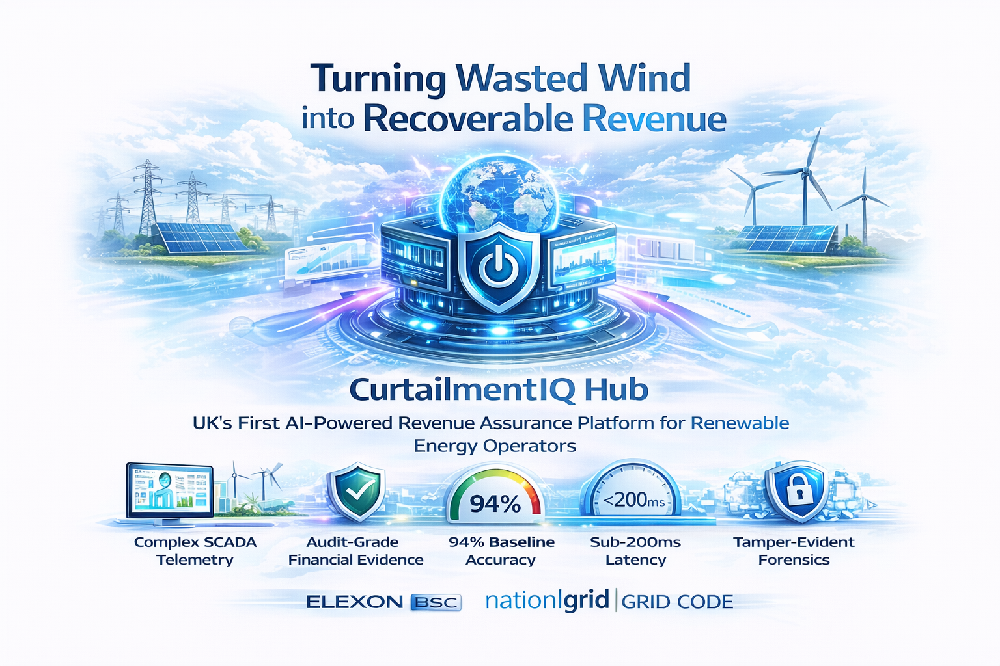
CurtailmentIQ Hub (NDFL Nonconformance-to-Design Feedback Loop) is a transformative revenue assurance and grid intelligence platform that bridges the "transparency gap" between renewable energy generators and national grid operations across the United Kingdom.
By combining a high-fidelity digital twin, automated signal fusion, and a tamper-evident provenance ledger, the system enables instant conversion of complex, high-frequency SCADA telemetry into audit-grade financial evidence empowering wind, solar, and storage operators to quantify, attribute, and recover revenue lost to grid curtailment with unprecedented precision.
Unlike legacy observability tools that merely flag anomalies, CurtailmentIQ Hub operates in true real time, processing sub-second data with under 200ms latency and cloud-native Lakehouse architecture the definitive assurance layer for the UK's zero-carbon power system transition.
Nikhil Elikatte is the Founder and Lead Data Engineer of CurtailmentIQ Hub, bringing over 5 years of hands-on experience in data engineering, scalable ETL development, and AI systems across the banking, finance, and energy sectors.
Holding an MSc in Artificial Intelligence from Northumbria University and certified as an Azure Data Engineer Associate, Nikhil architected the core "Bifurcated Truth" engine and the ACID-compliant Lakehouse storage model powering the platform.
His expertise in Azure ETL and UK energy market data structures ensures that every pound of recovered curtailment revenue is technically defensible, audit-grade, and aligned with the UK's Net Zero 2050 transition mandate.
Get In TouchCurtailmentIQ Hub transforms fragmented operational telemetry into audit-grade financial evidence from high-frequency signal ingestion to counterfactual baseline reconstruction, causal attribution, and automated executable rebuttal generation for revenue recovery.
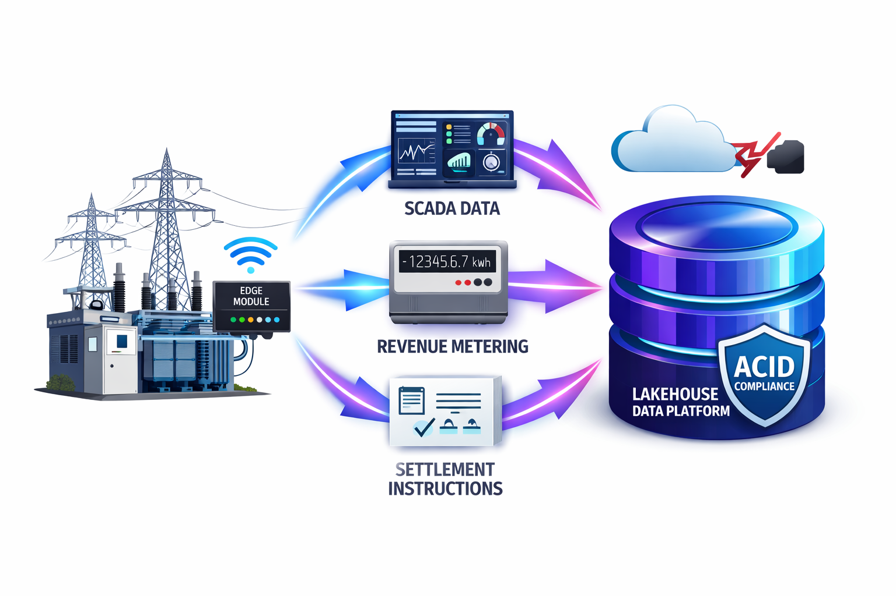
The platform connects via edge-ready modules at the substation level, ingesting sub-second SCADA telemetry, revenue-grade metering, and NESO settlement instructions into a unified ACID-compliant Lakehouse even during site-to-cloud connectivity failures.
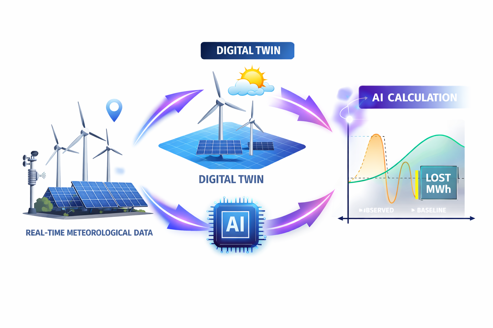
A physics-informed digital twin calculates exactly what each site "should have" generated, using real-time meteorological data and design-intent performance curves. The AI achieves 94% accuracy in baseline reconstruction providing defensible quantification of lost MWh.
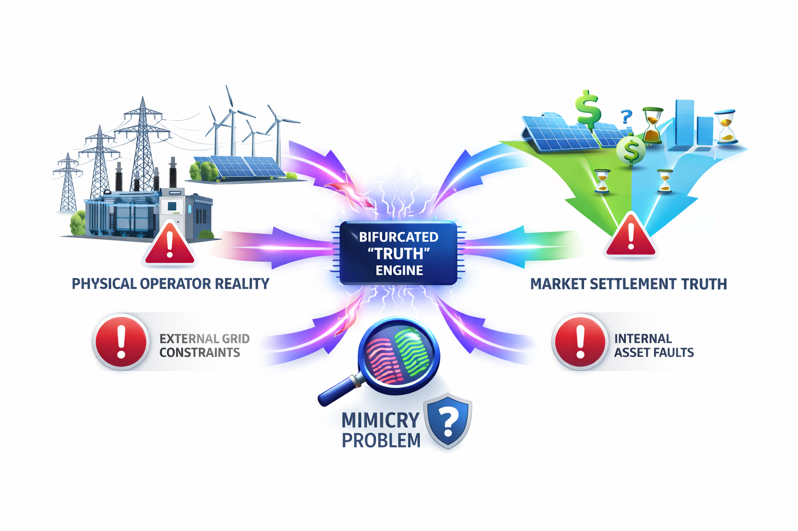
The "Bifurcated Truth" engine simultaneously calculates curtailment across Physical Operator Reality and Market Settlement Truth. It distinguishes external grid constraints from internal asset faults with forensic precision solving the "Mimicry Problem" that causes claim refusals.
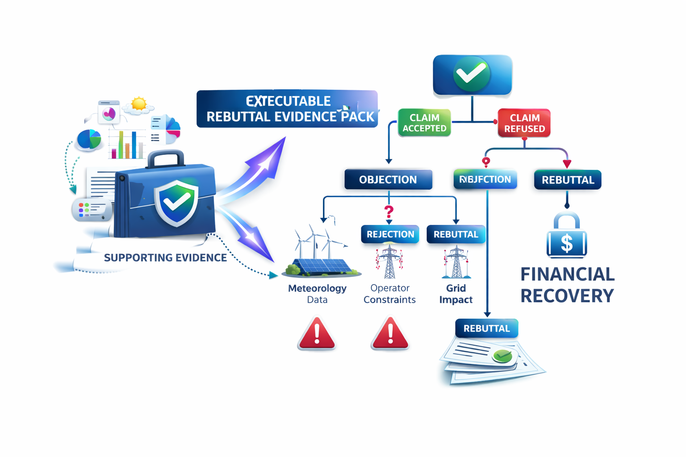
When the system detects a potential claim refusal, it triggers an "Executable Rebuttal Graph" a structured logic tree with supporting evidence that automatically anticipates and addresses common counterparty objections, turning abandoned revenue into secured financial recovery.
A suite of AI-powered forensic intelligence modules built specifically for UK renewable energy operators delivering audit-grade revenue assurance at institutional scale, from single-site pilots to multi-gigawatt national portfolios.
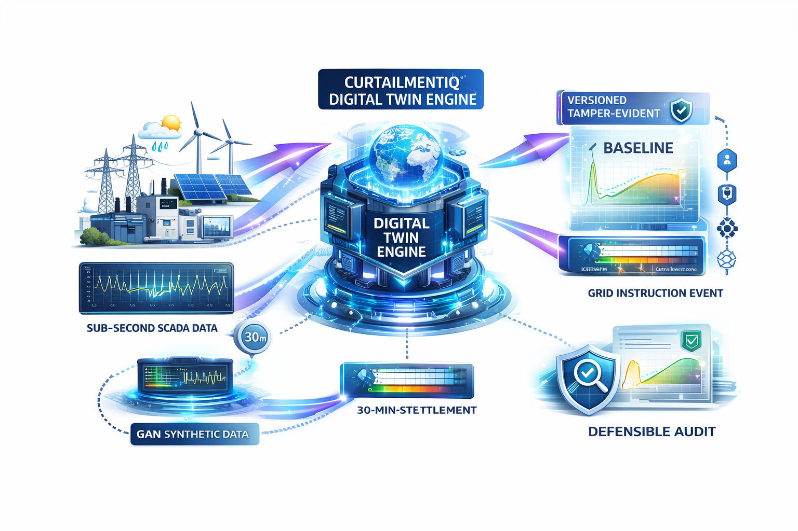
Physics-informed counterfactual generation baseline at 94% accuracy.
Uses physics-informed machine learning and real-time meteorological feeds to reconstruct exactly what each asset "should have" produced during a grid instruction event. The engine processes sub-second SCADA intervals, aligns them with 30-minute settlement periods, and generates a versioned, tamper-evident baseline that is defensible for Elexon BSC disputes and institutional audit. GAN-based synthetic data fills gaps for rare regional boundary faults.
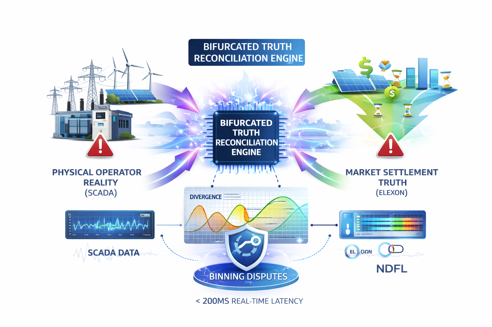
Simultaneous reconciliation of physical reality vs. market settlement truth.
The first UK platform to simultaneously calculate curtailment across two independent domains: Physical Operator Reality (SCADA) and Market Settlement Truth (Elexon). By treating the divergence between these two domains as a machine-readable output, NDFL resolves "binning disputes" that currently lead to millions in abandoned revenue with under 200ms processing latency for real-time operational visibility.
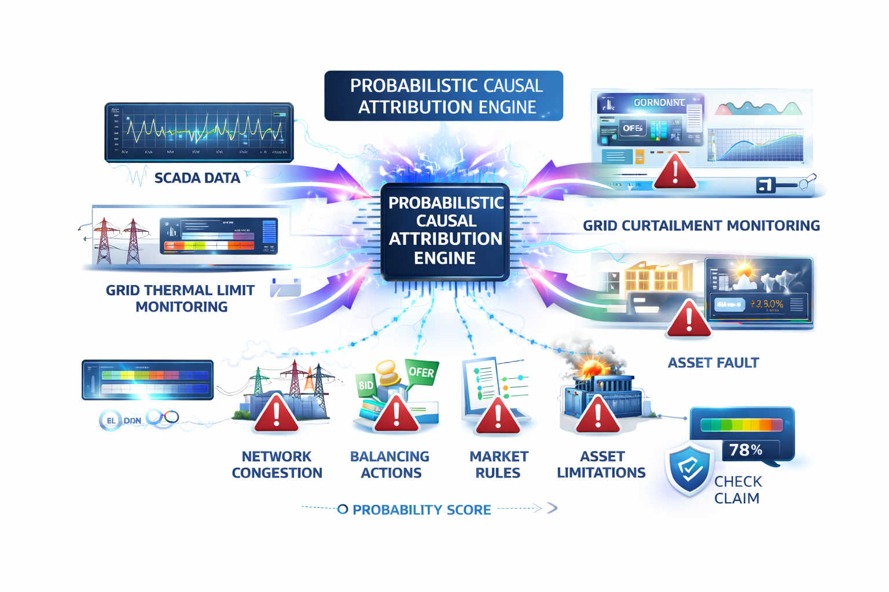
Forensic separation of grid constraints from internal asset faults.
Solves the "Mimicry Problem" where internal asset faults visually mimic grid curtailment in standard monitoring tools by cross-referencing SCADA data with grid thermal limits, Bid-Offer Acceptances, and B6 boundary events. Each loss event receives a probability score across five driver types: Network Congestion, Balancing Actions, Market Rules, Asset Limitations, and Weather ensuring operators only claim for grid-imposed curtailment.
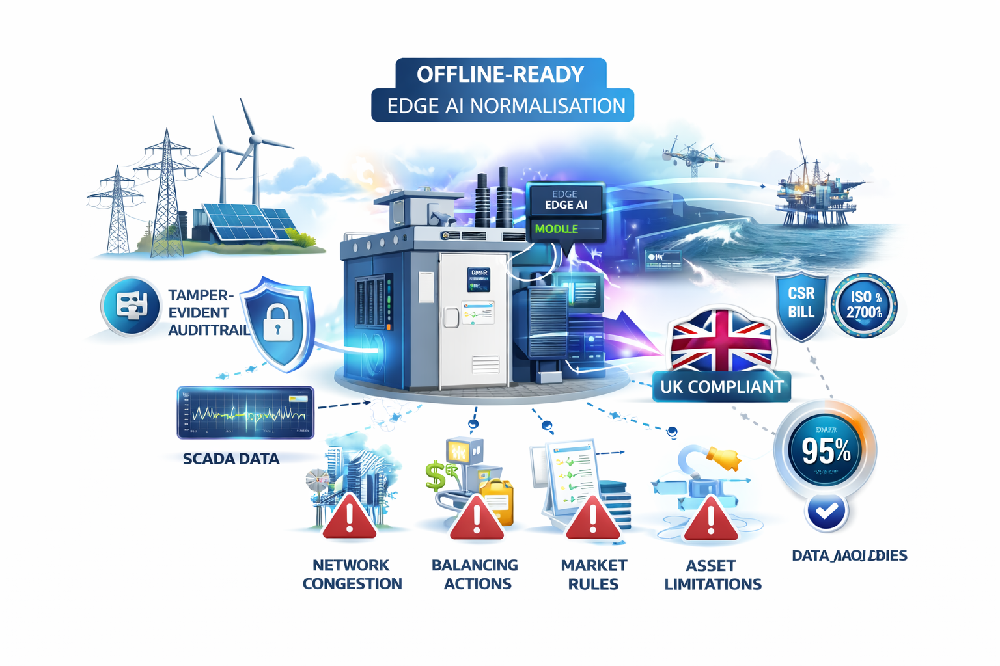
Continuous data capture at remote substations with limited connectivity.
Designed for critical national infrastructure, the Edge AI module encrypts and processes telemetry locally at the substation ensuring a continuous, tamper-evident audit trail even during site-to-cloud connectivity failures in remote rural or offshore environments. Fully compliant with the UK Cyber Security and Resilience (CSR) Bill and ISO/IEC 27001, providing 95%+ data capture functionality in low-bandwidth settings.
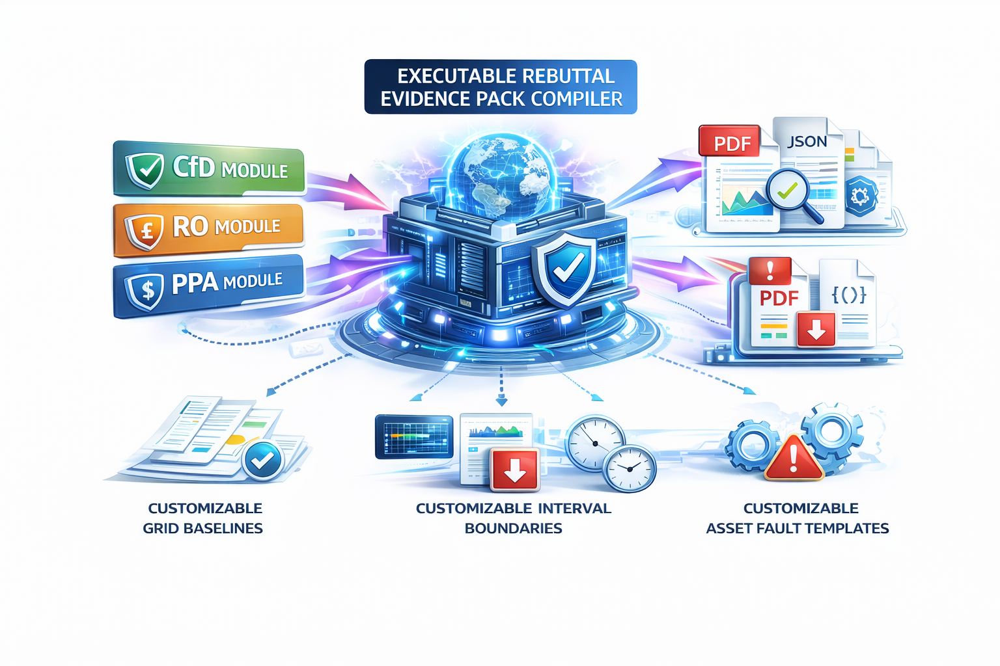
Automated dispute-ready proof artefacts for settlement claims.
Generates comprehensive "Evidence Packs" structured, audit-grade PDF/JSON artefacts that automatically anticipate and answer grid operator objections regarding alternate baselines, interval boundaries, or asset faults. Replaces expensive manual forensic consultancies (£15,000+ per dispute) with millisecond-generation, structured rebuttal logic that is resistant to administrative refusal. Includes customizable modules for CfD, RO, and PPA structures.
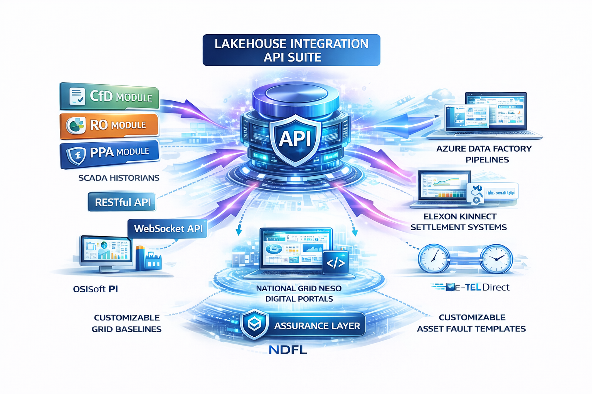
Seamless integration with SCADA historians, trading desks, and settlement portals.
RESTful and WebSocket APIs provide programmable access to the CurtailmentIQ forensics engine, enabling direct integration with existing SCADA historians (OSIsoft PI), Azure Data Factory pipelines, National Grid NESO digital portals, and Elexon Kinnect settlement systems. Modular design allows NDFL to act as an "Assurance Layer" that plugs into any existing energy estate creating a secondary licensing revenue stream for trading desk API integrations.
Priced as a fraction of manual forensic consultancy costs delivering 5x to 10x ROI on recovered curtailment revenue within a single high-wind event. Scalable from single-site pilots to multi-gigawatt institutional portfolios.
Everything you need to know about CurtailmentIQ Hub before getting started.
Ready to recover your abandoned curtailment revenue? Book a free forensic demo, request a pilot using your historical SCADA data, or speak to Nikhil directly. Our team is UK-based and ready to help.
LocationUnited Kingdom
Market FocusUK Renewable Energy Fleet Net Zero 2050
Response TimeWithin 24 hours on business days